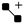

| Using | Features | Links |
This tab displays the perturbation graph, with tools for editing it, and a summary of the ligand data and hysteresis data (after a calculation has been run).
To rearrange the layout:
To highlight particular perturbations:
To delete ligands or connections from the diagram:
Select the ligands and connections.
Click the Delete button.
To add connections to the diagram:
Click the Add new connection button.

Select the ligand pairs.
To add ligands from a file to the diagram:
Choose From File from the Add New Ligands option menu.
Select the file in the dialog box that opens.
To sketch new ligands to add to the diagram:
Choose From 2D Sketcher from the Add New Ligands option menu.
Sketch a ligand in the 2D Sketcher.
Click Save as New.
Repeat steps 2 and 3 for each new ligand.
Click Close.
This tab contains a table of the ligands that have been imported into the workflow. The table columns are described below.
| # | Ligand number: index of the ligand in the order in which it was imported. |
| Ligand | Title of the ligand. |
| Bias | Column of check boxes that can be use to bias the graph construction to draw more connections to the ligand. The biasing is done by boosting the calculated similarity to other ligands. If you change the bias settings, you must click Regenerate Map to generate a graph with the new settings. |
| Exp. Affinity | Experimental binding free energy in kcal/mol. Any ligand whose binding affinity you enter is favored in the construction of the graph, by adding a further bias to the similarity. The affinity is also used in the analysis of the FEP results. To add affinity data, click Add Affinity Data. Once you have added affinity data, you can edit individual cells to set or change the affinity. |
| Pred. Affinity (kcal/mol) | Final predicted binding affinity (ΔG)in kcal/mol for a set of ligands. This prediction requires the experimental binding free energy for at least one of the ligands, which is used as the reference. If the experimental binding free energies for multiple ligands are available, then all these ligands are used as the reference to convert the relative affinity to the final predicted affinity, forcing the average of the predicted affinities and average of the experimental affinities to be equal among the ligands with experimental binding free energies. |
| Pred. Error (kcal/mol) | Minimum error along all paths from the reference ligand to the ligand. |
This tab reports hysteresis values around various cycles (closed paths in the graph).
| Hysteresis | Value of the hysteresis around a cycle. The value is colored according how well it has converged: green is good, yellow is acceptable, red is poor. The thresholds depend on the length N of the loop: 0.5√N for good, 0.5√N for poor. |
| Cycle | Information on the cycle for which the hysteresis was evaluated. |
The perturbation diagram consists of boxes connected by lines. The boxes represent the ligands; the lines represent allowed perturbations. You can drag the boxes to reposition them.
The buttons at the top left allow you to zoom in or out on the diagram, and fit the diagram to the display area.
Zooming in or out can also be done with the scroll wheel. When zoomed out, the ligands are represented by a number in a box. As you zoom in, the number is replaced by the 2d structure when the resolution is high enough to display it. Double-clicking on a connection zooms in to that connection.
When you pause the pointer over a ligand, the parts of the graph to which it is not connected are dimmed. When zoomed out, the 2D structures are also displayed in a tooltip.
You can select ligands and connections by clicking on them, or dragging over them. You can add ligands or connections to the selection, or remove them from the selection, with control-click. The selected objects are highlighted in yellow. Selected ligands are included in the Workspace.
Right-clicking on a connection displays a menu, which has a Delete item, and if the FEP results are available, an Analyzeitem.The Analyze item opens a panel with a more detailed analysis of the perturbation, including plots of data as a function of simulation time and analyses of protein-ligand interactions. See Analysis: ligand1 <--> ligand2 Panel for more information. The same analysis is done when you click on a ligand pair row in the Analysis tab.
Generate the perturbation scheme ("map") from the ligands in the table. The ligand structures are analyzed to find possible perturbations between them. This may take a few minutes, depending on the number of ligands. A progress dialog box is displayed while the analysis is running. When the analysis finishes, the diagram showing the possible perturbations is displayed.
The graph is constructed by determining the maximum common substructure between the ligands (using Canvas MCS with special atom types for FEP), and calculating the similarity. Connections are made between structures with high similarity. The similarity between one ligand and the rest can be boosted by setting the affinity or selecting the Bias option for that ligand in the Summary tab.
Once you generate a graph, the button text changes to Map Generated and the button is deactivated. When you edit the graph or make changes in the ligands table, the button text changes back to Regenerate Map and the button is reactivated. You can then click the button to create a new graph, for example with a different bias.
The similarity score is based on several ingredients:
Display perturbation properties on the map. The properties are color-coded and placed at the mid points of the lines.
The toolbar has the following buttons:
| Auto-layout
Automatically optimize the layout of the graph in the panel. |
|
| Add new connection
Add a connection between two ligands in the perturbation diagram. Click this button, then click the ligands to add the connection. |
|
| Undo
Undo changes to the perturbation scheme. You can undo multiple changes. |
|
| Redo
Redo changes to the perturbation scheme. You can redo multiple undone changes. |
|
| Delete
Delete the selected ligands and connections from the perturbation scheme. |